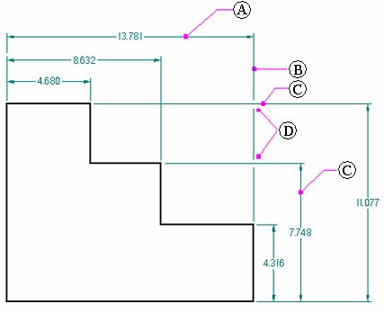

Add Projection Line Break command
Creates a break or gap in the dimension projection line wherever it intersects other dimensions.
The purpose of the projection line gap is to add visible white space and improve legibility. The size of the gap is set on the Lines and Coordinates page of the Dimension Properties dialog box.
Example:

-
(A) = selected dimension
-
(B) = projection line (broken)
-
(C) = intersecting dimensions (unbroken)
-
(D) = break gaps
The dimension projection line does not break where it intersects another dimension that is already broken. Also, it does not break for annotations.
How do I
Edit a 2D dimension (sketch, profile, draft)Move a dimension
Display a half dimension
Set terminator size and shape
Change dimension behavior
Change the orientation of a dimension
Break a dimension projection line
Remove breaks from a dimension projection line
Change the parent of a dimension by dragging it
Reattach a dimension or annotation using the Attach Dimension command
Add and remove jogs on a dimension
Activate a part for dimensioning in a draft quality view
Learn more
Dimension edit handlesSnap indicators for dimensions
Look up more details
Attach Dimension commandRemove Projection Line Break command
Activate Part command